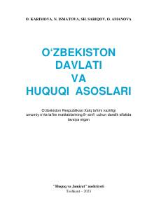

OD8-sinf o'quvchilari uchun O'zbekiston davlati va huquqi asoslari darsligi.
Ushbu darslik umumiy o'rta ta'lim maktablarining 8-sinf o'quvchilari uchun mo'ljallangan bo'lib, O'zbekiston davlati va huquqi asoslari, inson huquqlari hamda konstitutsiyaviy tuzum haqida fundamental bilimlarni beradi. Kitobda mustaqil O'zbekistonning huquqiy asoslari, davlat ramzlari va qonunchilik tizimi sodda va tushunarli tilda yoritilgan.